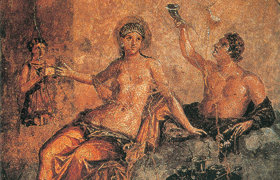

È un romanzo satirico avventuroso e una fonte storica di prima grandezza. L’autore non è certo, ma probabilmente è da identificarsi con “Petronio Arbitro”, soprannominato arbiter elegantiarum, amico di Nerone, ma da lui costretto a darsi la morte nell’anno 66. Appartiene alla più antica aristocrazia, ma ciò non gli impedisce di beffeggiarla e ridicolizzarla. L’opera doveva comprendere almeno 16 libri; ne sono rimasti frammenti (qualche centinaio di pagine, tuttavia), capaci di offrire uno spaccato della società romana in tutte le sue componenti. È stato notato come «tutti i toni siano opportunamente mescolati, dal tragico al comico, dal buffo al patetico. Nel Satyricon espressioni solenni, arcaiche, retoriche si fondono e si alternano con altre della più bassa trivialità; accanto al linguaggio del poema eroico, delle sale di declamazione, dei circoli eleganti, è introdotto assai spesso il linguaggio vernacolo della plebe» (Rostagni). Nota ancora Rostagni come Petronio sia estraneo a quel movimento filosofico moraleggiante che accendeva allora le coscienze migliori. Tuttavia, mentre costoro attingevano per reazione alla filosofia, «Petronio cerca conforto nei campi incantati della fantasia: si diverte a rappresentare, col puro spirito dell’arte, i tripudi, le libidini, le aberrazioni di una società depravata, presa dalla follia del piacere; si diverte a contemplare i ridicoli aspetti di quel mondo gavazzante e imputridito che, in contrasto con lo sperato regno dei filosofi, sembrava ormai trionfare negli ultimi anni di Nerone, sotto gli auspici del principe dissoluto e perverso». Il romanzo è scritto in prima persona dal protagonista, l’irrequieto Encolpio che viaggia con l’inseparabile efebo Gitone. A loro si accompagnano in un primo tempo Ascilto, personaggio rozzo e incolto e, in seguito, un altro tipo ugualmente mariolesco, ma raffinato, come il poeta Eumolpo. Si tratta di avventure strabilianti popolate da ladri, pervertiti, donne mondane e lussuriose, parassiti, poetastri e cantastorie: uno straordinario réportage sulle consuetudini di una certa società imperiale di nuovi ricchi, colti con straordinaria vivezza. Basti pensare alla spietata parodia di un pantagruelico banchetto offerto da un nuovo ricco, Trimalcione, divenuto personaggio emblematico, perfino ai nostri giorni.